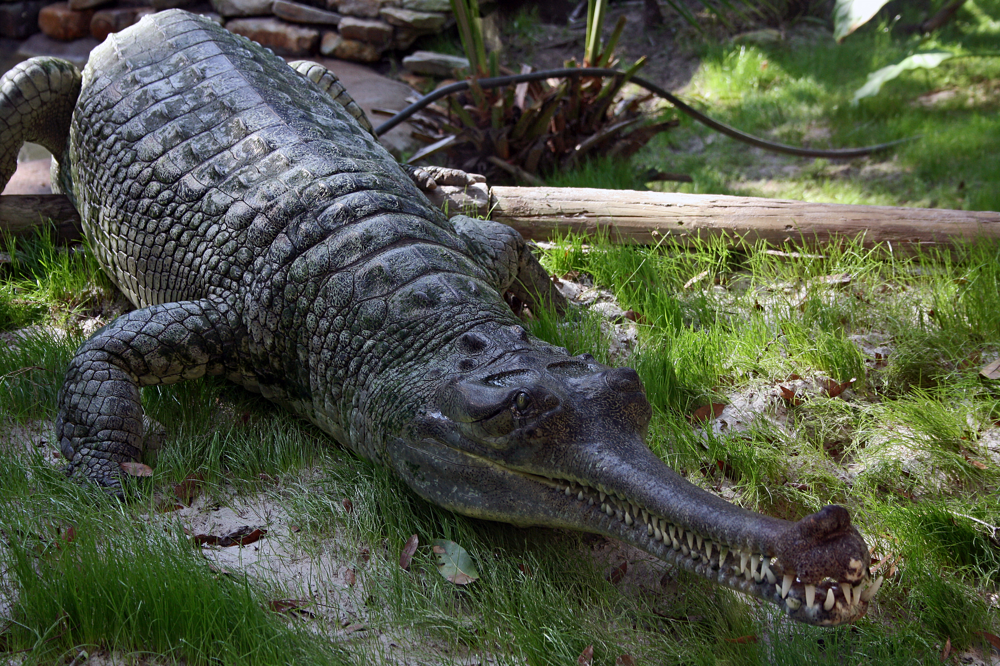

ประวัติตะโขง
ช่วงหัวค่ำวันหนึ่งของเดือนกันยายน พ.ศ. 2568 ในวันที่ความเงียบสงบของคลองบางสน อำเภอตากใบ จังหวัดนราธิวาส ใครจะคิดว่านั่นคือจุดเริ่มต้นของการจารึกประวัติศาสตร์หน้าใหม่ให้แวดวงอนุรักษ์ไทย เมื่อสัตว์เลื้อยคลานรูปร่างประหลาดที่มีส่วนปากเรียวยาวผิดจากจระเข้ทั่วไปได้ปรากฏตัวให้เห็น ก่อนจะได้รับการยืนยันอย่างเป็นทางการอีกครั้งในเดือนมกราคมที่ผ่านมาว่านั่นคือ ‘ตะโขง’ทีมวิจัยจากสถานีวิจัยสัตว์ป่าป่าพรุ-ป่าฮาลาบาลาลงพื้นที่สำรวจบริเวณดังกล่าว และพบตะโขงขนาดราว 1.5 เมตร ซึ่งอนุมานได้ว่ามีตะโขงในบริเวณนี้อย่างน้อย 2 ตัว (ตัวแรกที่ชาวบ้านพบความยาว 3 เมตร)
เหตุการณ์นี้เป็นการค้นพบที่ไม่เพียงแค่เจอสัตว์หายาก แต่ยังยืนยันว่า ‘ตะโขง’ (False Gharial) หรือ Tomistoma schlegelii ที่เคยเชื่อว่าสูญพันธุ์ไปจากธรรมชาติ ยังคงซ่อนตัวอยู่ในระบบนิเวศพรุของจังหวัดนราธิวาส
ตะโขง หรือ จระเข้ปากกระทุงเหว มีลักษณะทางชีววิทยาที่โดดเด่นจากจะงอยปากที่เรียวยาวมากเป็นพิเศษ ซึ่งยาวกว่าความกว้างที่ฐานปากถึง 3 เท่าตัว ภายในขากรรไกรบรรจุฟันแหลมคมลักษณะคล้ายเข็มจำนวน 76-84 ซี่ ทำหน้าที่เป็นเครื่องมือจับเหยื่อที่มีความลื่นได้เป็นอย่างดี ในอดีตเคยมีการเข้าใจผิด คิดว่าปากที่เรียวเล็กนี้ออกแบบมาเพื่อกินปลา และสัตว์มีกระดูกสันหลังขนาดเล็ก แต่การศึกษาสมัยใหม่พบว่าตะโขงเป็นผู้ล่าที่กินอาหารได้หลากหลาย โดยเฉพาะตัวเต็มวัยที่มีขนาดใหญ่กว่า 3-4 เมตร
วกมันล่าสัตว์เลี้ยงลูกด้วยนมหลายชนิด เช่น ทั้งลิงแสม ลิงจมูกยาว นกน้ำ กวาง และสัตว์เลื้อยคลาน ในบางประเทศมีรายงานการโจมตีวัวและมนุษย์ ซึ่งยืนยันถึงพละกำลังมหาศาลที่ซ่อนอยู่ภายใต้ความนิ่งสงบใต้ผิวน้ำ ถิ่นอาศัยตามธรรมชาติของตะโขงมีความเฉพาะตัวสูง โดยผูกพันอย่างยิ่งกับ ‘ป่าพรุ’ และพื้นที่ชุ่มน้ำในที่ราบต่ำ ชอบอาศัยอยู่ในแหล่งน้ำนิ่งหรือไหลช้า เช่น ทะเลสาบ แม่น้ำสายย่อย และลำคลองที่มีพืชพรรณหนาแน่นริมตลิ่ง การที่ตะโขงเลือกอาศัยในป่าพรุทำให้พวกมันกลายเป็นดัชนีชี้วัดความสมบูรณ์ของป่าชนิดนี้ แต่เมื่อป่าพรุถูกทำลายหรือถูกระบายน้ำออกเพื่อเปลี่ยนเป็นที่ดินเกษตรกรรม ตะโขงก็เป็นสัตว์กลุ่มแรกๆ ที่ได้รับผลกระทบจนนำไปสู่การสูญพันธุ์ในระดับท้องถิ่น
สถานะของตะโขงในปัจจุบันถือว่าน่ากังวลอย่างยิ่ง ตาม IUCN red list ในปี 2023 ถูกจัดอยู่ในชนิดที่ใกล้สูญพันธุ์ (Endangered) ทั่วโลกคาดการณ์ว่าเหลือตะโขงตัวเต็มวัยในธรรมชาติไม่เกิน 2,500 ตัว ภัยคุกคามที่ร้ายแรงอันดังหนึ่งคือการสูญเสียที่อยู่อาศัย โดยเฉพาะในเอเชียตะวันออกเฉียงใต้ การระบายน้ำออกจากป่าพรุเพื่อทำสวนปาล์มน้ำมันและยางพาราได้ทำลายพื้นที่อาศัยที่เหมาะสมของตะโขงไปมากกว่า 30-40 เปอร์เซ็นต์ ในช่วง 50 ปีที่ผ่านมา จนชั้นดินพีทแห้งลง (การสะสมของชั้นดินอินทรียวัตถุ ได้แก่ ซากพืช ซากต้นไม้ ใบไม้ที่ย่อยสลายอย่างช้าๆ) จนเกิดไฟป่าได้ง่าย เป็นเหตุให้แหล่งวางไข่ของตะโขงถูกทำลายไปเป็นจำนวนมาก นอกจากนี้ ตะโขงยังถูกล่าอย่างหนักเพื่อหนังและเนื้อ ในบางวัฒนธรรมคนท้องถิ่นมีความเชื่อว่าไข่ตะโขงมีคุณค่าทางโภชนาการสูงจึงถูกขโมยไปเป็นอาหาร นอกจากนี้ ยังมีสาเหตุจากการติดเบ็ดหรือตาข่ายดักปลาของชาวประมงที่ทำให้สัตว์บาดเจ็บและจากโลกนี้ไป
